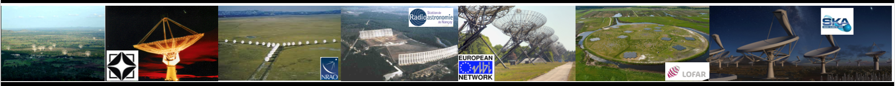

|
|
| Home |
Resume |
Publication |
Research | Teaching |
Links for Franco-Indian exchange program | Photos | Press releases & support for Women career in research | NenuFAR Commissioning results | SKA-project activities |

|
Click here to access the new Homepage Contact: ________________________________________________________________________________________________________________________________________ MAMTA POMMIER (mamta.pommier@gamil.com & mamtapan@gmail.com) CNRS/Laboratoire Univers et Particules de Montpellier (LUPM), University of Montpellier, LUPM CC 072 - Place Eugène Bataillon, 34095 Montpellier Cedex 5,France & International Astronomical Union https://sites.google.com/view/iau-women-in-astronomy/home?authuser=2 Webpage: https://pommierm.github.io/index.html http://www.researchgate.net/profile/Mamta_Pommier  |